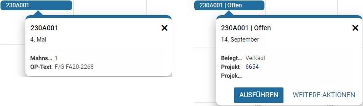
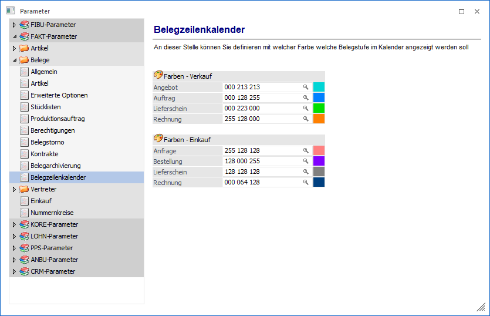

Wenn Offene Posten, Arbeitnehmer, Zeiten der Zeiterfassung, Adressen oder Belege als Basis des Kalenders verwendet werden, so können alle zur Verfügung stehenden Datumsfelder für die Anzeige genutzt werden.
Das Besondere an solch eine Art von Kalender ist Aktualität, d.h. dass die Termindaten immer "live" ermittelt und aktualisiert werden. Ein Verschieben von Termineinträgen ist nicht möglich!
Achtung
Wurde kein Datumsfeld in den Aufbau der Liste hinterlegt, so werden (je nach Listentyp) automatisch Felder in den Kalender übergeben.
ü 03 - Fakturen O.P. (Offene
Posten)
Buchungsdatum
ü 09 -
Arbeitnehmerstamm
Geburtsdatum
ü 23 - Adressen
Geburtsdatum
ü 27 - Zeitauswertung
Datum von /
Datum bis
ü 28 - Belege
Datum der
Erstanlage
Tooltip

Im Tooltip werden im Standard keine Buttons dargestellt. Eine Ausnahme bildet der Kalender auf Grundlage von Belegen. Hier werden automatisch die Buttons "Ausführen" und "Weitere Aktionen" zur Verfügung gestellt.
Ø Filter [optional]
Wurde in den Einstellungen ein Filterfeld hinterlegt, so kann durch Anwahl des Buttons "Filter" der Quickfilter ausgelöst werden.
Ø Ausführen
Die zuletzt verwendete "Aktion" wird ausgeführt.
Ø Weitere Aktionen
Durch Anwahl dieses Buttons stehen die folgenden Aktionen, bezogen auf den Beleg der Belegzeile, zur Verfügung:
ü Belege
ü Belegmanagement
ü Info im Belegmanagement
ü Belegkurzinfo
ü als xxx bearbeiten (abhängig vom Beleg)
Farbgebung
Die Farbgebung von Listen des Typs "28 - Belege" kann pro Belegstufe gesteuert werden. Hierfür steht in den FAKT-Parametern der Bereich "Belegzeilenkalender" zur Verfügung.

Die Farbgebung der weiteren Kalender kann nicht selber definiert werden. D.h. die Kalendereinträge werden in blauer Farbe ausgegeben.